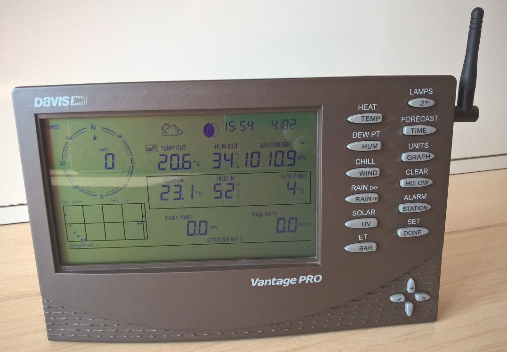

| Titolo |
Risp. |
Autore e Località |
Ultimo Aggiorn. |
| Cerco sensore Oregon per esterno modello thgn800 ... | 2 | Resegone
S. Omobono T. (BG) - 450 slm | Resegone
31/08/2018 - 18.23 |
|
| Consiglio Modello Web-cam con invio immagini via FTP ... | 18 | neveapalate
Suzzara (MN) - 18 m | TrangaWK
30/08/2018 - 09.59 |
Ciao a tutti
Qualcuno
mi sa consigliare un modello di web-cam che riesca ad inviare via Ftp
in una cartella del mio dominio (esempio: ftp.miodominio.it/webcam) le
immagini riprese ad un intervallo di tempo prestabilito?
| | Modifica | Rispondi | |
|
| Come si puo’ trasformare un datalogger seriale a ethernet a ”basso costo” ... | 1 | Davide LC
Valmadrera (LC) | fabioar58
05/08/2018 - 14.03 |
per
l’invio dei dati senza pc acceso? E’ possibile? Ho visto adattatori di
prezzi vari, anche economici..ma serviranno allo scopo?
Grazie!
| | Modifica | Rispondi | |
|
| stazioni con datalogger di una settimana, quali? ... | 4 | fabioar58
Castellanza (VA) 216 slm | Buros
27/07/2018 - 19.58 |
davis, ok.
lacrosse, pure ma dipende dal modello.
oregon? attendo info da chi le conosce.
in pratica ne voglio comprare un’altra,
la davis l’ho già,
la lacrosse pure, ma la demolirò.
cosa suggerite?
(unico requisito è il datalogger)
grazie.
| | Modifica | Rispondi | |
|
| Da ieri la consolle della Davis VP2 non riceve più il segnale ... | 14 | camel
Cassano d’Adda (MI) | camel
23/07/2018 - 23.17 |
...provato
a cambiare le batterie sia dell’ISS che della console, nulla da fare,
la console mostra "receiving from station n.1" ma i quadri con i vari
dati restano vuoti. Potrebbe essere solo un disturbo elettromagnetico o
l’ISS è andato (è del 2009)?
Non mi pare esista un tasto reset per l’ISS come sulle Oregon, o la possibilità di cambiare frequenza di trasmissione. Sbaglio? | | Modifica | Rispondi | |
|
| Buongiorno, Qualcuno ha una consolle Oregon wmr 968 da vendere o da buttare? (vt) | 1 | BJT_Dimo
Santa Maria Hoè (LC) - 390 mt | TrangaWK
05/07/2018 - 16.24 |
|
| pluviometro otturato ed è piovuto come fare? ... | 4 | neveapalate
Suzzara (MN) - 18 m | watson
05/07/2018 - 15.03 |
| Ciao
ragazzi, ieri sera abbiamo avuto diversi temporali, "fortuna" vuole che
proprio ieri mi si è otturato il pluviometro (pulito 2 mesi fa si e
no), stamattina era pieno d’acqua ho riaperto il foro inferiore per far
uscire l’acqua ma in pochi secondi è scesa tutta e sicuramente non me
l’ha misurata correttamente, come sarebbe da fare in questa situazione
nel caso mi capitasse ancora? grazie. | | Modifica | Rispondi | |
|
| Info connessione Tim per trasmissione dati CML con baracchino Asus ... | 2 | matteo-cr
casalmaggiore (CR) | matteo-cr
02/07/2018 - 20.38 |
| Mi hanno proposto connessione telecom in fibra. A cosa devo stare attento per evitare rogne con la trasmissione dati? Grazie, M. | | Modifica | Rispondi | |
|
| Mettere online webcam Foscam su mio sito meteo altervista ... | 18 | simo91
Castano Primo (MI) 182 m | TrangaWK
08/06/2018 - 09.53 |
Ciao a tutti,
ho appena acquistato una webcam Foscam FI9800P e vorrei mettere online l’immagine che si auto-aggiorna sul mio sito altervista (
Clicca Qui ).
Ho provato a dare un occhio in rete e ho scoperto che un metodo è quello della trasmissione dell’immagine via FTP.
Sono
riuscito a configurarlo ed a far inviare le immagini sul sito ma le
stesse immagini vengono salvati con nomi diversi e mi è quindi
impossibile avere un unica immagine aggiornata.
Qualcuno potrebbe
gentilmente aiutarmi? Vi premetto che informaticamente parlando sono
proprio a livello base (forse anche meno :) )
Grazie!
Simone
| | Modifica | Rispondi | |
|
| Termoigrometro stazione David Vantage Vue ... | | Michele73
Arcore (MB) | Michele73
20/05/2018 - 18.15 |
Ciao
a tutti, avrei bisogno un aiuto. Lo scorso ottobre ho acquistato una
stazione Davis Vantage Vue, ho acquistato anche il datalloger ip.
Fino
a circa un paio di mesi fa nessun problema, poi la console ha
cominciato a non ricevere più i dati di umidità e temperatura.
Riceve tutti i dati tranne quelli, o meglio saltuariamente li riceve ma il più delle volte no.
Ho
scritto alla mail di supporto della Davis e mi hanno risposto che
potrebbe essere un problema di sbalzi di energia offrendosi di chiamarmi
per dirmi come fare a risolvere il problema. Io ho risposto se per
piacere me lo avessero potuto scrivere per maggior chiarezza ma poi non
mi hanno più risposto.
Qualcuno di voi conosce la soluzione?
Grazie
Michele
| | Modifica | Rispondi | |
|
| Discrepanza di valori tra consolle e weatherLink ... | | fabryVC
Asigliano (VC) | fabryVC
17/03/2018 - 10.05 |
stamattina,forse
a causa della mancata corrente di stanotte dovuta a un temporale,valori
non uguali tra consolle DAVIS e software
11.2 mm consolle-------19.6 WeatherLink.
Da cosa può essere dovuto secondo voi?
Grazie. | | Modifica | Rispondi | |
|
| Problema al pluviometro Davis: rileva/non rileva le piogge ... | 2 | Buros
Copreno di Lentate (MB) - 273m | Buros
14/03/2018 - 22.01 |
Ieri
mattina era tutto ok (o almeno pensavo lo fosse), aveva piovuto di
notte ed il pluviometro mi indicava 3mm (in realtà in zona si stava già
sui 6mm, ma io credevo plausibili quei 3mm).
Nel pomeriggio ha
ripreso a piovigginare ed il pluviometro mi rimaneva fermo a 3mm; per un
pò non ho dato peso alla cosa, supponendo dipendesse dalla debolissima
precipitazione, ma col passare delle ore vedendo che rimaneva sempre
fermo a 3mm la cosa mi è cominciata a puzzare, e naturalmente ho capito
ci fosse un problema allorquando ha cominciato a piovere con più
decisione ed il pluviometro rimaneva fermo a 3mm.
Mi sono limitato ad
andare a controllare che non ci fosse un corpo estraneo che facesse da
tappo nell’imbuto del pluviometro, ma questi era bello pulito. La
bascula, pur non avendola fatta rimbalzare, non era bloccata (l’ho
smossa un pò con le dita e si muoveva senza difficoltà meccaniche)...
Stamattina
quando mi sono alzato vedo che il pluviometro ha lavorato, indicandomi
però solo 1.6mm quando in zona siamo tutti over 10mm.
Non capisco
quindi di cosa possa trattarsi: in console i numeri sono presenti
(nessun trattino ad indicare assenza di segnale), il fatto che abbia
indicato qualche precipitazione significa che le bascule hanno giocato, e
che quindi elettronicamente non dovrebbero esserci danni...
Da che cosa può dipendere?
Mi
viene il dubbio (unicamente perchè quando ieri ho aperto l’imbuto era
sera, pioveva ed ho fatto un controllo molto veloce senza pensare a
questa eventualità) che possa esserci magari una cimice o cmq qualcosa
che si è posizionata davanti alla fotocellula che conteggia gli scatti
della bascula, potrebbe essere? In alternativa qualcuno sa darmi qualche
altra motivazione?
Sicuramente appena finirà di piovere controllerò
più attentamente, se però nel frattempo qualcuno ha avuto un problema
simile e sappia già dirmi di cosa possa trattarsi...
Grazie, buona giornata | | Modifica | Rispondi | |
|
| Estensione rete wifi per ipcam ... | 1 | mury
Peia (BG) - 642 s.l.m. | alex7
29/01/2018 - 10.47 |
Ciao ragazzi mi serve un aiuto perchè ci capisco poco in queste cose:
Ho
un normale router wifi in casa, a circa 300 metri di distanza ho un
terreno dove vorrei posizionarci in futuro una ipcam (adibita anche a
osservazioni meteo tipo webcam).
Vorrei poter portare il segnale wifi
da casa mia sino là.. premetto che non ho ostacoli in muratura ma bensì
solo alcuni alberi. Esternamente alla casa a circa 4 metri di altezza
ho una presa elettrica. Ho attaccato un normalissimo extender wifi da 20
euro e mi ha portato il segnale sino a circa 100 metri fuori casa ( ma a
me servirebbero altri 200 metri circa). Conoscete qualcosa di piu
potente? o qualche altro consiglio su come fare? | | Modifica | Rispondi | |
|
| Info temperatura ... | 4 | Gallo1
Maddalena Somma L. VA | Gallo1
22/01/2018 - 16.18 |
Ciao
secondo voi avere l iss a 50 cm da un muro divisorio dei giardini in
calcestruzzo... Può influire sui rilevamenti di temperatura? Se si mi
dovrei alzare un po di altezza?
Grazie | | Modifica | Rispondi | |
|
| consiglio termoigro x casa ... | | enricobs
Frontignano (BS) | enricobs
21/01/2018 - 16.50 |
mi serve un sensore termoigrometro comune x casa, che mi dica max e min della giornata
non mi importa registrare i dati
chiedo consiglio grazie | | Modifica | Rispondi | |
|
| pluviometro particolare ... | 1 | enricobs
Frontignano (BS) | zione
16/01/2018 - 16.09 |
|
| Per chi fosse interessato ecco modo per mettere online Weatherlink e Weather34.. ... | 3 | BJT_Dimo
Santa Maria Hoè (LC) - 390 mt | BJT_Dimo
10/01/2018 - 10.33 |
... sito dalla grafica molto accattivante personalizzabile e soprattutto TOTALMENTE GRATUITO . I dati sono in real-time.
Questo è il mio sito(provvisorio) Altervista con Weahter34:
www.meteoroby.altervista.org/pws/index.php
Questo è il link della guida molto semplice da seguire. Ho messo il link con il traduttore:
translate.googleusercontent.com/translate_c?depth=2&nv=1&rurl=translate.google.com&sp=nmt4&tl=it&u=http://pysselilivet.blogspot.it/2017/01/install-weather34-with-weatherlink.html%3Fm%3D1&usg=ALkJrhgl6mQqxeJLZgYRxtyCXYhaRUQhBw
Spero di essere stato d’aiuto..
Buone feste a tutti..Roby | | Modifica | Rispondi | |
|
| Info datalogger vp2 ... | 2 | Gallo1
Maddalena Somma L. VA | Gallo1
04/01/2018 - 12.52 |
Ciao un datalogger di una stazione comprata in us va bene su una comprata qua da noi?
Grazie
Jacopo | | Modifica | Rispondi | |
|
| Incongruenze dati tra console e weatherlink ... | | Buros
Copreno di Lentate (MB) - 273m | Buros
26/12/2017 - 13.26 |
Ho
lasciato in parte incompleto il mio database personale in excel perchè
alcuni valori di temperatura ed umidità stavano per registrare il nuovo
picco min o max in prossimità della mezzanotte ed essendo andato a letto
prima ho, per l’appunto, lasciato vuote certe caselle.
Mi sto
accorgendo però che tra il valore che posso reperire in console (la
console arriva a 25gg indietro a partire da oggi compreso) e quello
registrato sul weatherlink ci sono diverse incongruenze.
Per la
temperatura mi era stato spiegato che la differenza di 1-2 decimi tra
console e WL era determinato dalla conversione celsius-fahrenheit, ma
vedo che certi dati sono diversi anche nel campo igrometrico.
Non
essendo presenti nei reports gli estremi min-max dell’umidità, devo
andarmeli a ricercare nel browse e mi sono accorto che alcuni valori non
coincidono, alcune volte in eccesso ed altre volte in difetto.
Come mai anche l’umidità presenta incongruenze tra console e WL ? | | Modifica | Rispondi | |
|
| Vendo console VP1 ... | 1 | mory
Binago (CO) 420m | Davide LC
08/12/2017 - 21.22 |
Non so se posso scriverlo qui, in ogni caso vendo console per davis vantage pro 1 6150EU, 100€ trattabili, consegna a mano
 | | Modifica | Rispondi | |
|
| Davis vp2, problemi scaricamento dei dati ... | 1 | Simone82
Corteolona (PV) | Scheva(Va)
05/12/2017 - 14.50 |
| mentre
scaricavo sul pc i dati settimanali il pc si è spento per mancanza di
alimentazione. risultato: è andato a pallino weatherlink 6.0.0. che
segna ottobre 2058 invece che dic 2018. oltretutto non mi scarica più
nemmeno i dati. help! non só che fare... | | Modifica | Rispondi | |
|
| Nuova piattaforma Davis Weatherlink ... | 2 | dbFui
Burligo (BG) - 550 m s.l.m | dbFui
01/12/2017 - 20.32 |
Online
la nuova piattaforma Weatherlink Davis. Tutte le nuove stazioni con
Datalogger Davis da oggi utilizzeranno questa nuova e funzionale
piattaforma da cui e’ possibile vedere gratuitamente la schermata in
tempo reale, mentre per i grafici, i dati tabellari e per scaricare
direttamente i dati meteo dal sito pare sia previsto un piccolo canone
annuale dopo un periodo freeware mensile.
weatherlink.com
La migrazione sarà automatica e gratuita entro il secondo quadrimestre 2018. | | Modifica | Rispondi | |
|
| cadute di segnale (stazioni oregon) e altri problemi d’interferenze ... | 29 | luka
Caleppio di Settala(MI)101m | Fra
27/11/2017 - 22.53 |
Non sono esperto in materia, mi limito a segnalare e a chiedere a chi ne sa più di me.
Ogni
tanto, la sera, il segnale dei tre sensori oregon (i classici economici
ma dal funzionamento impeccabile senza questi problemi), sparisce, di
colpo. E altrettanto di colpo, ritorna.
In concomitanza, come verificato ieri sera, l’auto fatica ad aprirsi con il telecomando se non a meno di un metro da essa.
Inoltre
ogni tanto sparisce il segnale wifi e sono obbligato a spegnere e
riaccendere il modem: lo smartphone tenta senza successo di connettersi e
lo fa solo dopo il riavvio.
Ho un amplificatore di segnale che ho
spostato lontano ma che in precedenza (due anni) non aveva mai dato
problemi. In ogni caso l’ho allontanato visto che serve al piano di
sotto.
Non ho introdotto alcun nuovo apparato generatore di onde radio.
Non inserisco mai l’allarme di casa visto che c’è sempre qualcuno.
Il sospetto, lo dico da inseperto, potrebbe essere:
1-
il radioamatore a meno di 600 metri da casa, ad es. quando lavora su
determinate frequenze. Ma per anni non era più accaduto nulla e
quell’antenna esiste da oltre un decennio
2- un impianto di allarme del vicinato schermato male. Ma il segnale torna, di notte.
3- ho visto qualche volta il vicino con un drone, ma dati gli orari...
4- qualche cinesata presa dal vicino, in questo caso QUANTO deve essere vicino?
Ps.
la stazione di caleppio non dà alcun problema, ma da come ho letto ha
una modalità di trasmissione dati molto più sofisticata. | | Modifica | Rispondi | |
|
| Oregon WMR500 ... | 3 | Paolo71
Trecate (NO) - 136 m | zione
16/11/2017 - 16.08 |
Buongiorno,
qualcuno di voi ne sa di più?
Clicca Qui
Viste le caratteristiche e la marca non mi sembra così male per una stazione professionale di fascia media.
Su
altri siti ho letto di critiche al posizionamento del pluvio, un po’
troppo sotto l’anemometro e che potrebbe risentire di gocce che
rimbalzano dalla superficie dello stesso, ma non mi sembra poi
strutturalmente così diversa dalla disposizione dei sensori della Davis
Vantage Vue. | | Modifica | Rispondi | |
|
| Perchè le vecchie WMR avevano una cella solare dedicata per l’anemometro? ... | | Buros
Copreno di Lentate (MB) - 273m | Buros
08/11/2017 - 19.39 |
Le
vecchie WMR della Oregon (WMR918/928/968) avevano le celle solari
STR918 per termoigrometro e pluviometro, con tanto di disegnino
rappresentanti il funghetto ed il pluvio, e la cella solare STR938 per
l’anemometro (anche qui col disegnino).
Avendo una vecchia WMR918 che
utilizzo in ditta (solo per la temperatura) ed essendo rimasto senza
celle solari mod. STR918, ho voluto provare la cella dedicata per
l’anemometro col funghetto e... funziona!
Perchè mai allora è stata creata una cella solare solo per l’anemometro se poi in realtà funziona anche con gli altri sensori? | | Modifica | Rispondi | |
|
| Termoigrometro Portatile ... | 18 | alex7
Levate (BG) | alex7
30/10/2017 - 13.54 |
qualcuno saprebbe indicarmi in buon termoigrometro di precisione ma portatile ?
budget sui 50-60€
ho visto questo della TFA ma non conosco l’azienda
Clicca Qui | | Modifica | Rispondi | |
|
| Stazione meteo solo termoigro collegabile al pc: si trova qualcosa? ... | | Buros
Copreno di Lentate (MB) - 273m | Buros
25/10/2017 - 21.46 |
| Esiste
una stazioncina meteo con solo termoigrometro che possa essere
collegata al pc in modo da tenere sott’occhio il dato live? | | Modifica | Rispondi | |
|
| Ciao vendo mini PC perfettamente funzionante a 50€ per info lasciate un commento (vt) | | dbFui
Palazzago (BG) - 340 m s.l.m | dbFui
21/10/2017 - 13.28 |
|
| finalmente sturato il mio pluvio ... | | silvios
Niviano (PC) | silvios
17/09/2017 - 12.50 |
Ciao ragazzi,
Cosa non si fa per la propria passione!
erano
due settimane che aspettavo un mio amico che mi andasse sul tetto per
controllare il pluviometro della Davis che non segnava più la pioggia.
Oggi,
stufo di aspettare, mi sono armato di.buona volontà e sono riuscito ad
andare fin sul colmo del tetto per raggiungere la Davis nonostante le
vertigini.
La passione supera pure le vertigini!
non sopportavo proprio più di vedere ogni giorno la mia stazione online a 0 mm nonostante le piogge.
Sono arrivato su e ho trovato il vaso contenitore nero completamente colmo di acqua.
In fondo dentro l’ugello c’era una vespa completamente conficcata dentro che faceva da tappo.
Ma secondo voi a spanne, considerando il contenitore nero completamente pieno, quanti mm almeno potevano essere stati persi? | | Modifica | Rispondi | |
|
| Portata segnale wireless sensori Davis Vantage Vue / WMR300 ... | 2 | Paolo71
Trecate (NO) - 136 m | Buros
14/09/2017 - 20.24 |
Buongiorno a tutti,
dopo l’ennesimo guasto della mia Lacrosse WS2801IT ho deciso di passare ad una Davis Vantage Vue o ad una Oregon WMR300.
Qualcuno
sa dirmi se posso avere dei problemi di trasmissione del segnale
posizionando la consolle a 10 metri dal gruppo di sensori ma in un piano
interrato?
Il vantaggio della Lacrosse e che poteva trasmettere i
dati del datalogger al pc tramite trasmissione wireless, avendo il pc
nel piano interrato e la consolle al piano superiore.
Con la Davis invece devo collegare la consolle direttamente al pc e quindi posizionare la stessa al piano interrato.
Grazie mille. | | Modifica | Rispondi | |
|